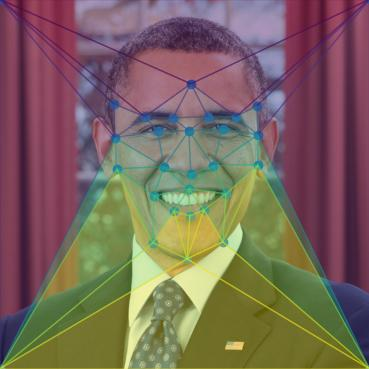
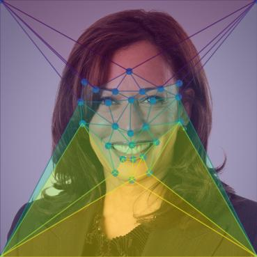
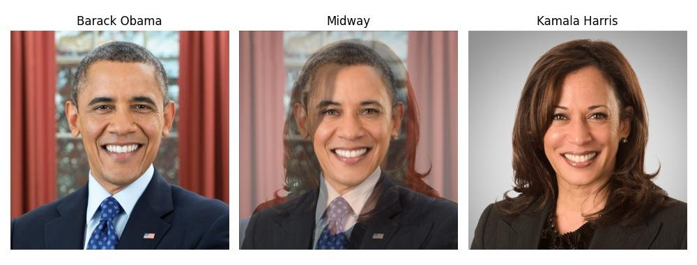
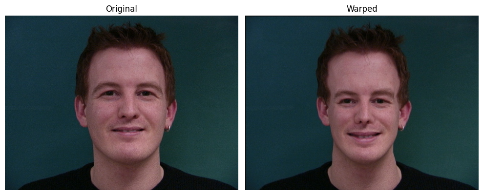
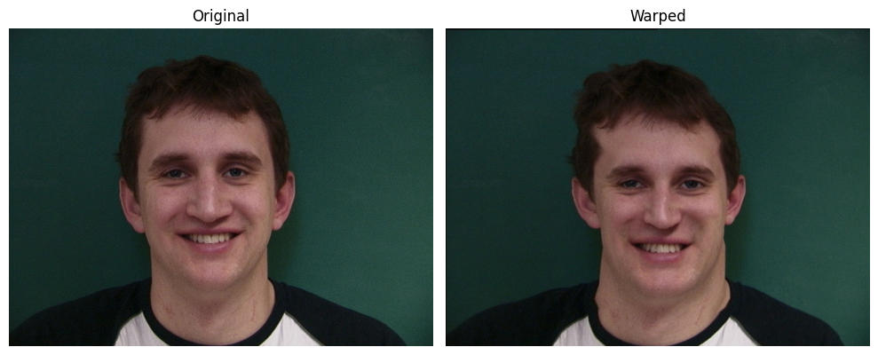
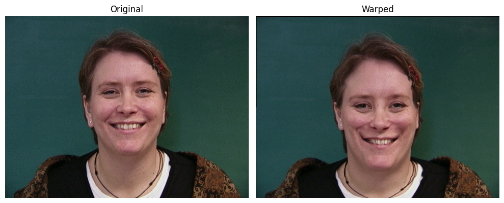
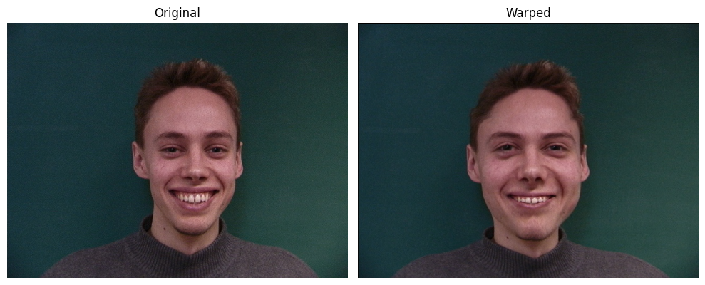
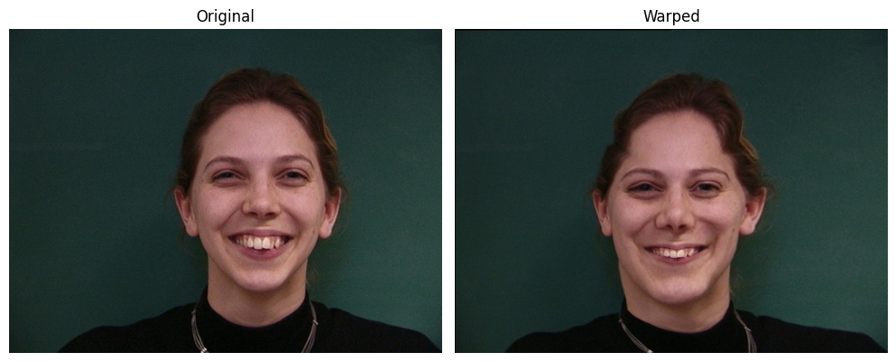

CS 180 Project 3: Face Morphing and Modelling a Photo Collection
In this project, I morphed some faces.
Part 1: Defining Correspondances
For this project, I implemented code for selecting facial keypoints with matplotlib's ginput function.
In total, I used 30 points, including the 4 corners of the image.
Here are the generated points and triangles for my blends of Barack Obama and Kamala Harris.


Part 2: Computing the Mid-Way Face
When blending together Barack Obama and Kamala Harris, this is the generated midway face.

Part 4: Mean Face of a Population
I decided to use the
Danes
dataset to calculate the mean face of a population.
Here is the average happy face:
Here are some happy Danish faces, warped into the average shape:





Here is Zendaya's face, warped into the Danish geometry, and vice versa.